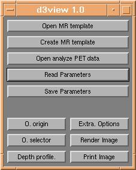
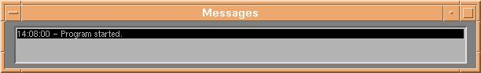

d3view is a matlab program, and is started from a running matlab command
prompt. When d3view starts, the user is presented with the main command panel and the
message box.


The main control panel is used for file control and for bringing up other windows with
adjustable parameters. During program execution messages are presented in the message
window.